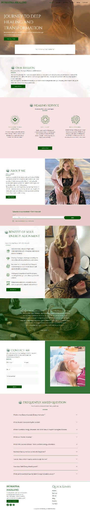

Real project · Wellness website
Somatra Healing
A softer wellness-service experience designed to keep the positioning clear while still guiding visitors toward a useful next step.
What the business needed
The website needed to communicate a wellness-focused offer in a way that felt aligned with the brand while still giving visitors enough structure to understand the service and continue.
What was built
The experience combines a calmer visual presentation with clearer service explanation and action points so the brand atmosphere does not obscure the practical customer journey.
What is easier now
A visitor can take in the wellness positioning, understand the kind of help being offered and move toward the relevant next action without the page becoming vague.